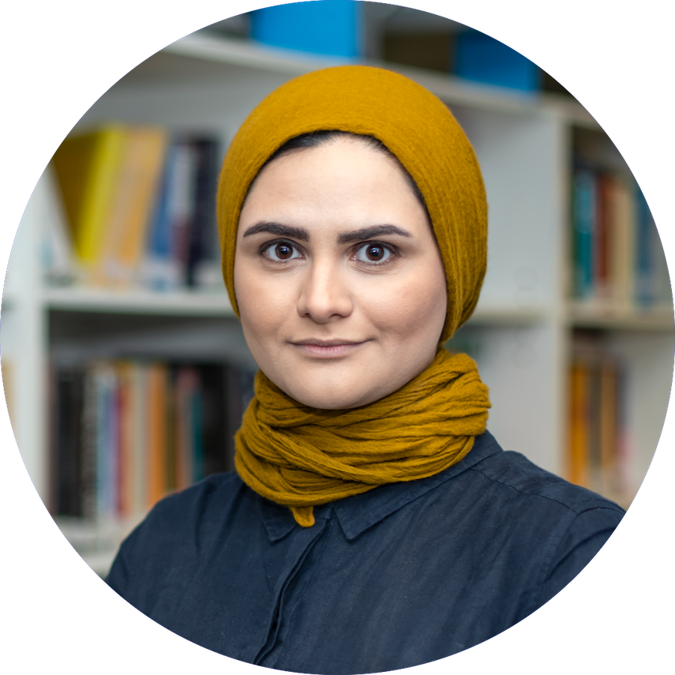

Home

Replace this block with a short bio, research interests, and links (e.g. Google Scholar, ORCID).
Research highlights
- Theme one — one sentence.
- Theme two — one sentence.
- Theme three — one sentence.
Selected Links
Publications
Below is a selected list of my publications.
- Perturbation-guided mapping of colorectal cancer cell states to causal mechanisms. bioRxiv, 2026-03.
- Beyond single-axis designs: multi-objective optimization for complex perturbation atlases. ICLR 2026 MLGenX.
- Structured and interpretable patient embeddings from Single-Cell Foundation Models. ICLR 2026 Gen2. Co-last author.
- Generative Modeling of Spatial Transcriptomics via Gaussian Mixture Flow Matching. ICLR 2026 Gen2.
- Multimodal weakly supervised learning to identify disease-specific changes in single-cell atlases. bioRxiv, 2024-07.
- An integrated transcriptomic cell atlas of human endoderm-derived organoids. Nature Genetics, 2025, 1-12.
- Probe set selection for targeted spatial transcriptomics. Nature Methods, 2024, 1-11.
- GraphCompass: spatial metrics for differential analyses of cell organization across conditions. Bioinformatics, 40(Supplement_1), July 2024, i548-i557. DOI
- Dividing out quantification uncertainty allows efficient assessment of differential transcript expression with edgeR. Nucleic Acids Research, 52(3), 2024, e13-e13.
- Population-level integration of single-cell datasets enables multi-scale analysis across samples. Nature Methods, 2023. Helmholtz Munich Best Paper Award.
- MsImpute: Estimation of missing peptide intensity data in label-free quantitative mass spectrometry. Molecular and Cellular Proteomics, 2023. Outstanding Technological Innovation article by MCP journal.
- Best practices for single-cell analysis across modalities. Nat Rev Gen, 2023.
- Biologically informed deep learning to query gene programs in single-cell atlases. Nature Cell Biology, 2023, 1-14.
- Continual single-cell architecture surgery for reference mapping. ICML 2022 Workshop on Computational Biology.
- Disentanglement via mechanism sparsity by replaying realizations of the past. ICLR 2024 Workshop on Machine Learning for Genomics Explorations.
- Identification of cell types, states and programs by learning gene set representations. bioRxiv, 2023-09.
- Conditionally Invariant Representation Learning for Disentangling Cellular Heterogeneity. arXiv preprint arXiv:2307.00558, 2023.
Students
PhD students, MSc / BSc students.
Mentoring/Co-supervision
- Zihe Zheng, PhD, TUM/Helmholtz Munich, 2025.
- Suhan Cho, PhD, TUM/Helmholtz Munich, 2025.
- Goncalo Pinto, PhD, TUM/Helmholtz Munich, 2025.
Supervision
- Lisa Schunke, MSc CS Informatics, TUM, 2025. Now PhD applicant Vienna.
- Layla Zadina, BSc Robotics, TUM, 2025.
- Lars Pechowski, BSc Mathematics, TUM, 2025.
- Zhiyuhan Song, MSc CS Informatics, TUM, 2025.
- Johannes Weindl, MSc CS Informatics, TUM, 2024.
- Mikkel Rassmusen, MSc CS, DTU, 2024. Now PhD graduate student DTU.
- Ismail Benayed, BSc Robotics, TUM, 2024.
- Georgiana Barbut, MSc Robotics, TUM, 2024. Now PhD applicant Vienna.
- Rashika Jakhmola, MSc Mathematics, TUM. Now PhD graduate student DKFZ.
- Lucas Ronchetti, BSc CS, TUM, 2023.
- Tom Fischer, MSc Mathematics, TUM, 2023.
- Rasmus Moller Larsen, MSc CS, DTU, 2023. Now PhD graduate student Helmholtz Munich.
- Jack Finlay, Visiting HIDA scholar, Duke University, 2023.
- Yi Xie, Visiting student, WEHI, 2019. Now PhD student China.
Contact
- soroor.hediyehzadeh@helmholtz-munich.com
- Address
- Helmholtz Zentrum München
Ingolstädter Landstraße 1
85768 Neuherberg, Germany